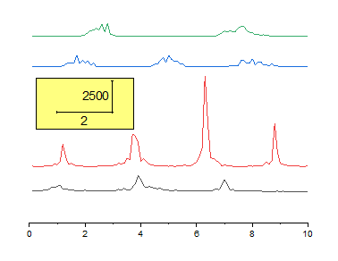
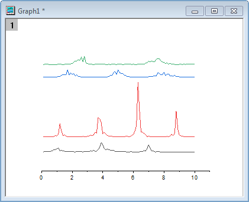
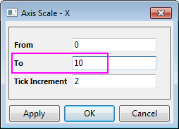
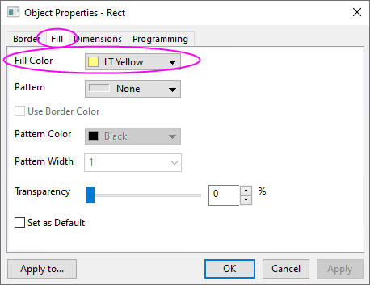
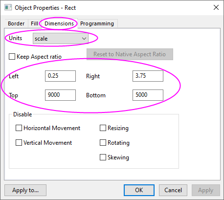
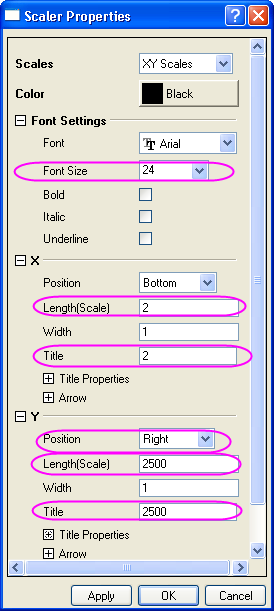
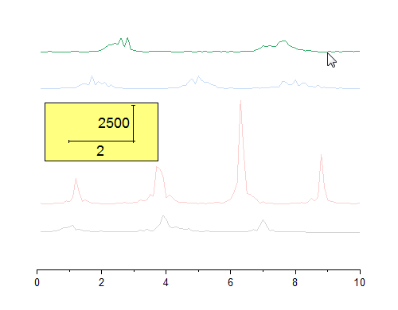
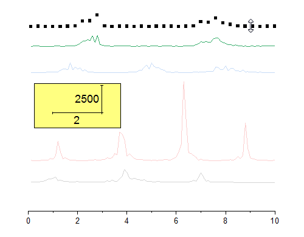

Gestapelte Liniendiagramme mit Y-Versatz
StackLine-YOffset
Zusammenfassung
Dieses Tutorial zeigt Ihnen, wie Sie ein Diagramm mit gestapelten Linien mit Y-Versatz erstellen.
- 
Origin-Version mind. erforderlich: Origin 2015 SR0
 |
Neben den gestapelten einzelnen Liniendiagrammen, die in diesem Tutorial beschrieben werden können Sie gestapelte Liniendiagramm erstellen, die aus Untergruppen von Linien bestehen, wobei die Untergruppen versetzt werden. Siehe Einzelheiten unter Registerkarte Stapeln (Details Zeichnung).
|
Was Sie lernen werden
- Ein Diagramm mit gestapelten Linien und Y-Versatz erstellen
- Ein rechteckiges Objekt benutzerdefiniert anpassen
- Eine neue XY-Skala hinzufügen
Schritte
Dieses Tutorial basiert auf dem Projekt Tutorial Data: <Origin-Verzeichnis>\Samples\Tutorial Data.opj.
Ein gestapeltes Liniendiagramm erstellen
- Öffnen Sie das Projekt Tutorial Data und navigieren Sie zum Ordner Stack Lines by Y Offsets im Projekt Explorer.
- Markieren Sie alle Spalten im Datenarbeitsblatt Book6A und wählen Sie dann im Menü Zeichnen: Einfache 2D: Linien mit Y-Versatz, um ein Diagramm mit gestapelten Linien mit Y-Versatz zu erstellen.
Das gestapelte Liniendiagramm benutzerdefiniert anpassen
- Löschen Sie die folgenden Objekte, indem Sie sie markieren und dann die Taste Entfernen auf Ihrer Tastatur drücken:
- Legende
- Y-Achse
- Beschriftungen der Y-Achse
- Titel der Y-Achse
- Titel der X-Achse
- 
- Klicken Sie auf die X-Achse und wählen Sie in der Minisymbolleiste die Schalfläche Achsenskalierung , um den Dialog Achsenskalierung - X zu öffnen. Setzen Sie den Wert für Bis auf 10. Klicken Sie auf OK, um den Dialog zu schließen.
- 
XY-Skala hinzufügen
- Klicken Sie auf die Schaltfläche Rechteck in der Symbolleiste Hilfsmittel und erstellen Sie ein Rechteck auf dem Diagramm.
- Klicken Sie doppelt auf das Rechteck, um den Dialog Eigenschaften zu öffnen. Ändern Sie die folgenden Einstellungen.
-
Registerkarte Füllen
- Füllfarbe = Hellgelb
- 
-
Registerkarte Dimension
- Einheit = Skala
- Links = 0,25
- Oben = 9000
- Rechts = 3,75
- Unten = 5000
- 
- Klicken Sie auf OK, um den Dialog Objekteigenschaften zu schließen.
- Wählen Sie Einfügen: XY-Skalierer im Origin-Menü, um einen neue XY-Skalierer zu erstellen.
- Klicken Sie doppelt auf die Skala, um den Dialog Eigenschaften Skala zu öffnen. Legen Sie folgende Eigenschaften im Dialog fest:
-
Zweig Schrifteinstellungen
- Schriftgröße = 24
-
Zweig X
- Länge (Skala) = 2
- Titel = 2
-
Zweig Y
- Position = Rechts
- Länge (Skala) = 2500
- Titel = 2500
- 
- Klicken Sie auf OK, um den Dialog Eigenschaften Skala zu schließen.
- Verschieben Sie das Skalaobjekt auf das von Ihnen erstellte Rechteck.
Versatz der Zeichnungen ändern
- Klicken Sie einmal auf die obere Datenzeichnung, um sie auszuwählen.
- 
- Ziehen Sie mit der Maus, um die Datenzeichnung zu verschieben.
- 
- Hinweis: Alternativ können Sie zur Registerkarte Versatz im Dialog Details Zeichnung gehen und den Y-Versatz dort ändern.